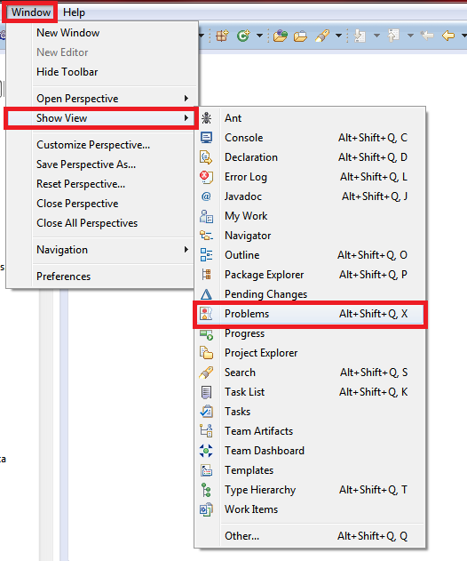

Informational, Warning, and Error markers are created during the HREF and CONREF scans and can be viewed in the standard Eclipse Problem view. If this view is not visible, select Window > Show View > Problems. 